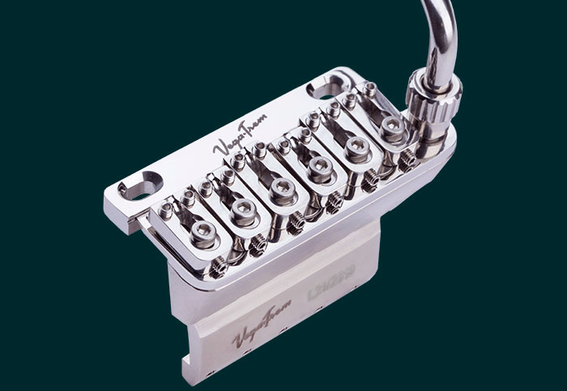
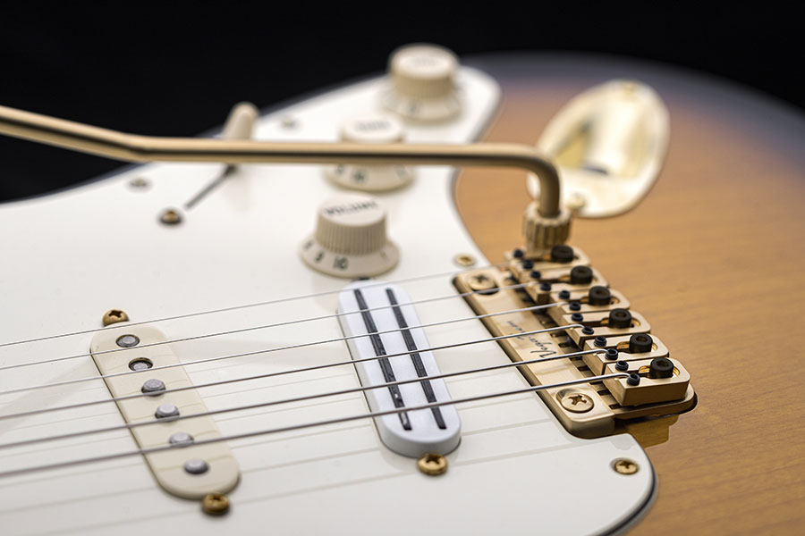
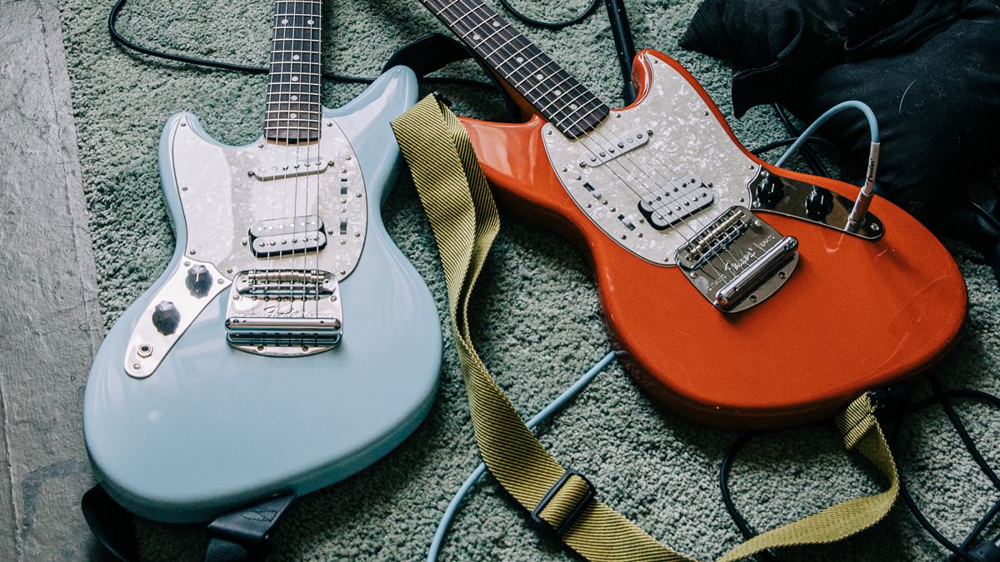

El nuevo tremolo de VEGATREM revoluciona los puentes flotantes
Hacer vibrar de emoción al público en cualquier rincón del planeta. Este es el objetivo del Vegatrem VT1, el nuevo puente flotante que marca un antes y un después en los vibratos para guitarra. Se trata de la revisión de una idea surgida a finales de los años setenta de la mano de Floyd Rose, mediante la cual se consigue un movimiento extra respecto al diseño clásico llamado hasta entonces vibrato. De esta manera se logran efectos novedosos en la interpretación musical que en su momento popularizaron guitarristas como el genial Eddie Van Halen, Joe Satriani y Steve Vai entre otros.
Las ventajas del trémolo patentado VT1 son revolucionarias. Este es el único puente flotante de doble acción que no requiere lijar ni modificar la cavidad original de las guitarras tipo strat. Y esto significa que la guitarra no perderá valor cuando se quiera vender en el mercado de segunda mano. Otra ventaja única es que no se necesita realizar ninguna preinstalación en la guitarra. También prescinde del sistema de bloqueo y no usa microafinadores. Su instalación es fácil y sencilla, no se va a necesitar un lutier: todo son ventajas. Chekealo aqui en sitio oficial de VegatremEdición especial de la guitarra Jag-Stang de Kurt Cobain por fender

“Desde que comencé a tocar, siempre me gustaron ciertas cosas de ciertas guitarras, pero nunca pude encontrar la combinación perfecta de todo lo que estaba buscando”, dijo Cobain en una entrevista de 1994 con Fender Frontline.
“El Jag-Stang es lo más parecido que conozco“. Disponible en modelos para diestros y zurdos, así como en los colores Fiesta Red y Sonic Blue, la histórica viola cuenta con un cuerpo de aliso, un diapasón de palisandro de 7.25 de radio, pastillas humbucker personalizadas y de una sola bobina de estilo vintage. “Cuando echamos un vistazo a los bocetos que Kurt Cobain había elaborado para la guitarra de sus sueños, nos impresionó lo intrincado que era su diseño”, dijo Justin Norvell, vicepresidente ejecutivo de Fender Products, en un comunicado. “Honramos el modelo original: todas las especificaciones de la nueva Jag-Stang son como eran. No se le hizo nada nuevo, realmente queríamos mantenerlo alineado con la visión de Kurt. A través de nuestra relación de largo tiempo con Kurt Cobain Estate, siempre supimos que queríamos darle vida a su visión. "Ha sido un inmenso honor ayudar a hacer realidad su idea y revivir este modelo”. La guitarra Kurt Cobain Jag-Stang tiene un precio de 1.249 dólares y se puede adquirir en versión tanto para zurdos como para diestros a través de la web oficial de Fender.